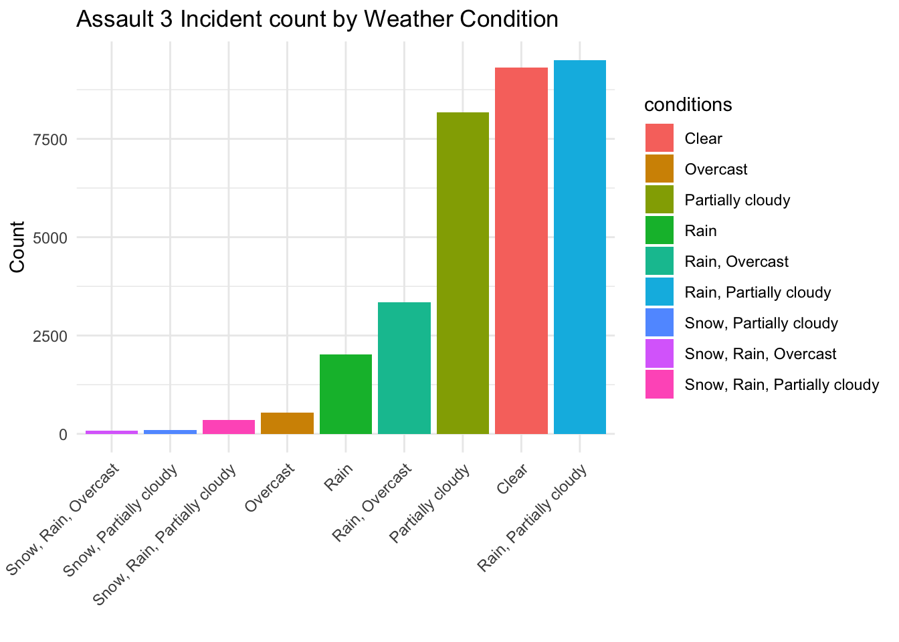
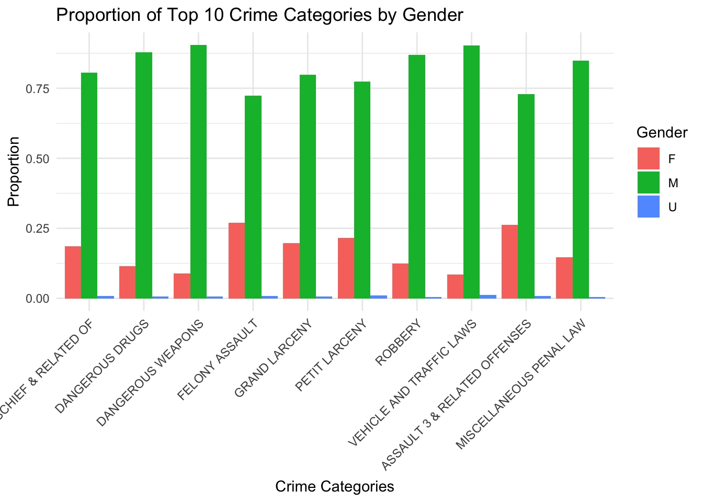
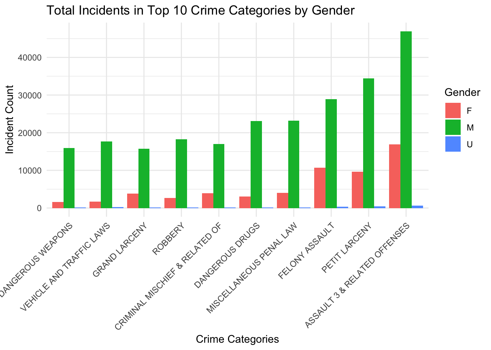
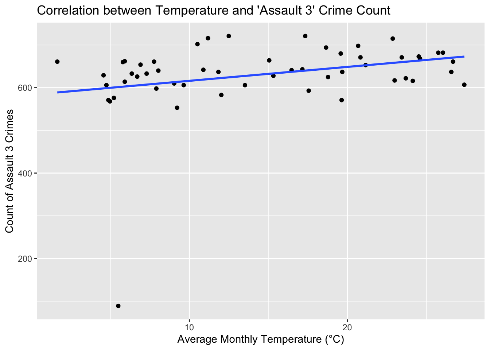

Analysis
Here we provide a detailed analysis using more sophisticated statistics techniques.

This comes from the file analysis.qmd.
We describe here our detailed data analysis. This page will provide an overview of what questions you addressed, illustrations of relevant aspects of the data with tables and figures, and a statistical model that attempts to answer part of the question. You’ll also reflect on next steps and further analysis.
The audience for this page is someone like your class mates, so you can expect that they have some level of statistical and quantitative sophistication and understand ideas like linear and logistic regression, coefficients, confidence intervals, overfitting, etc.
While the exact number of figures and tables will vary and depend on your analysis, you should target around 5 to 6. An overly long analysis could lead to losing points. If you want you can link back to your blog posts or create separate pages with more details.
The style of this paper should aim to be that of an academic paper. I don’t expect this to be of publication quality but you should keep that aim in mind. Avoid using “we” too frequently, for example “We also found that …”. Describe your methodology and your findings but don’t describe your whole process.
Example of loading data
The code below shows an example of loading the loan refusal data set (which you should delete at some point).
Note on Attribution
In general, you should try to provide links to relevant resources, especially those that helped you. You don’t have to link to every StackOverflow post you used but if there are explainers on aspects of the data or specific models that you found helpful, try to link to those. Also, try to link to other sources that might support (or refute) your analysis. These can just be regular hyperlinks. You don’t need a formal citation.
If you are directly quoting from a source, please make that clear. You can show quotes using > like this
> To be or not to be.To be or not to be.
Rubric: On this page
You will
- Introduce what motivates your Data Analysis (DA)
- Which variables and relationships are you most interested in?
- What questions are you interested in answering?
- Provide context for the rest of the page. This will include figures/tables that illustrate aspects of the data of your question.
- Modeling and Inference
- The page will include some kind of formal statistical model. This could be a linear regression, logistic regression, or another modeling framework.
- Explain the ideas and techniques you used to choose the predictors for your model. (Think about including interaction terms and other transformations of your variables.)
- Describe the results of your modelling and make sure to give a sense of the uncertainty in your estimates and conclusions.
- Explain the flaws and limitations of your analysis
- Are there some assumptions that you needed to make that might not hold? Is there other data that would help to answer your questions?
- Clarity Figures
- Are your figures/tables/results easy to read, informative, without problems like overplotting, hard-to-read labels, etc?
- Each figure should provide a key insight. Too many figures or other data summaries can detract from this. (While not a hard limit, around 5 total figures is probably a good target.)
- Default
lmoutput and plots are typically not acceptable.
- Clarity of Explanations
- How well do you explain each figure/result?
- Do you provide interpretations that suggest further analysis or explanations for observed phenomenon?
- Organization and cleanliness.
- Make sure to remove excessive warnings, hide most or all code, organize with sections or multiple pages, use bullets, etc.
- This page should be self-contained, i.e. provide a description of the relevant data.
Explantory Analysis
It shows the number of crime incidents for each month of the year. The vertical axis indicates the number of crime incidents, ranging from 0 to above 20,000. The bar chart shows a trend of increase in crime from 2022 to 2023.
Selecting by Incident_Count
The bar chart presents a comparison of incident counts across the top 10 crime categories. The most frequently reported category is “Assault & Related Offenses,” which leads the chart. “Petit Larceny” appears as the second most prevalent, followed closely by “Dangerous Drugs.” The categories at the lower end of the spectrum, “Dangerous Weapons” and “Grand Larceny,” have the fewest reported incidents among the top 10.

On this graph we are showing the number of cases per race among all races. On this graph we can see that the lowest number of cases per race are represented by the Indian/Alaskan native people. The highest is for colred people having over 11k cases during this period.

This bar chart illustrates the racial composition of crime across ten categories, with the green segment indicating a dominant proportion of Black individuals in every category, followed by White Hispanics, represented by the pink segment. The smallest proportions are contributed by Asian/Pacific Islanders and American Indian/Alaskan Natives, shown in orange and red. This visualization provides a proportional breakdown by race, with each color-coded segment corresponding to the percentage of total incidents attributed to that racial group, reflecting the diversity and potential disparities within crime statistics.
Selecting by Incident_Count
`summarise()` has grouped output by 'OFNS_DESC'. You can override using the
`.groups` argument.
The stacked bar chart visualizes the proportions of the top 10 crime categories distributed by gender, distinguishing between female (F), male (M), and unspecified (U). It’s apparent that male-associated incidents dominate each crime category, with a markedly higher proportion compared to females and unspecified genders across the board. Notably, crimes associated with “Dangerous Drugs,” “Felony Assault,” and “Robbery” show a substantial majority of male involvement. This chart effectively conveys the gender distribution within these crime categories but does not provide the actual number of incidents or contextual background that might explain the observed gender differences.
Selecting by Incident_Count
`summarise()` has grouped output by 'OFNS_DESC'. You can override using the
`.groups` argument.
This graph displays a breakdown of crime incidents by gender across different categories, with green bars representing males, red bars for females, and blue bars for unknown gender. A striking feature of the chart is the predominance of green bars (male incidents), which are consistently the highest in every crime category, indicating a higher number of male-associated incidents in these categories. The most significant numbers of incidents for both males and females are recorded in “PETIT LARCENY” and “ASSAULT 3 & RELATED OFFENSES.” Incidents with an unknown gender, represented by blue bars, are the lowest across all categories, suggesting that gender data is more often available than not. The overall trend suggests that while crime affects all genders, males are associated with a higher number of incidents in the data represented.

The bar chart displays the frequency of various crime types, categorized as Felony, Infraction, Misdemeanor, and Violation. The vertical axis indicates the number of cases, while the horizontal axis lists the crime categories. Misdemeanor appears to be the most common, followed by felonies. The crime incidents of infraction and violation are the least with small numbers of cases.
Selecting by Incident_Count
`summarise()` has grouped output by 'LAW_CAT_CD'. You can override using the
`.groups` argument.
The bar chart shows the distribution of crime incidents across different categories—Infraction, Violation, Felony, and Misdemeanor—segregated by age groups. The graph illustrates that the 25-44 age group has the highest incidence of felonies, a significant number of misdemeanors, and relatively lower counts for infractions and violations, suggesting this age range is the most involved in crime. The other age groups contribute fewer incidents across all categories, with the least involvement by those under 18 and over 65.
Selecting by Incident_Count
`summarise()` has grouped output by 'OFNS_DESC'. You can override using the
`.groups` argument.
This bar chart illustrates the frequency of different crimes for various age groups. Notably, the 25-44 age group shows the highest incident counts in every category, while the groups under 18 and over 65 have significantly fewer incidents across all crime categories.